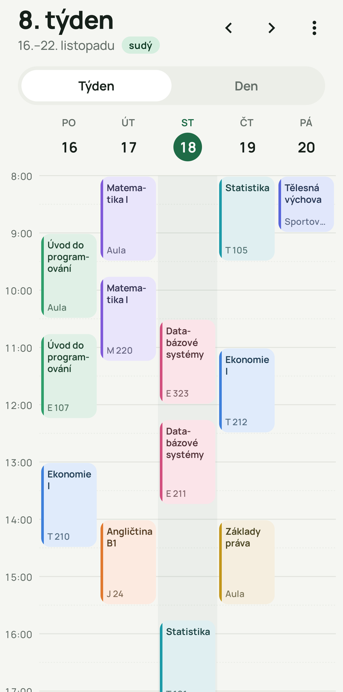

Přihlásíš se jednou a pak už jen otevřeš aplikaci. Týden jako v Bakalářích, jen hodiny, které opravdu máš, a widget na ploše, který ukáže, kam máš jít.
Dny jsou vedle sebe a čas jde shora dolů. Každá hodina je tak vysoká, jak dlouho trvá, takže hned vidíš, kde máš díru na oběd a kdy končíš.
Každý předmět má svou barvu. Dny, kdy nemáš nic, se dají v nastavení schovat.

U některých cvičení má UIS jen poznámku „Sudý týden“, schovanou pod rozvrhem. Aplikace ji přečte a v lichém týdnu ti tu hodinu vůbec neukáže.
Zkus si to. Takhle vypadá čtvrtek v sudém a lichém týdnu.
Co máš první, v jaké místnosti a u koho. Mezi hodinami uvidíš, kolik máš volna. Během výuky ukazuje, kolik ještě zbývá do konce hodiny a za jak dlouho začíná další.
Rozvrh je uložený v telefonu, takže se načte i bez signálu.
Dva widgety: Rozvrh na den se zbývajícími hodinami a malá Další hodina. Když už dnes nic nemáš, ukážou nejbližší den s výukou.
Obnovují se přesně ve chvíli, kdy hodina začne nebo skončí. Přidáš je v aplikaci v Nastavení.
Android 8.0 a novější. Nová verze se nainstaluje přes starou a přihlášení zůstane. Všechny verze
Google u nových vývojářských účtů chce poplatek a několik týdnů uzavřeného testování, než aplikaci pustí ven. Na rozvrh pro pár spolužáků je to zbytečné.
Proto to varování od Play Protect. Neznamená, že je v aplikaci něco špatně, jen že ji Google nezná. Zdrojový kód je celý na GitHubu.
Heslo zůstává jen v tvém telefonu, zašifrované klíčem z Android Keystore. Posílá se jen na is.czu.cz, stejně jako když se přihlašuješ v prohlížeči. Aplikace nemá žádný vlastní server, analytiku ani reklamy.
Při dalším obnovení se přihlášení nepovede a aplikace tě požádá, ať se přihlásíš znovu. Uložený rozvrh mezitím zůstane vidět.
Ano, při přihlášení se aplikace zeptá na ověřovací kód. Pokud UIS kód vyžaduje i později, aplikace tě o něj požádá.
Ano. Hodiny s konkrétním datem se ukážou jen v tom týdnu, kdy opravdu jsou. Mimo období výuky (podle „Platnosti“ v UIS) ukáže prázdný týden.
Zatím ne, jen rozvrh výuky.
Napiš to do Issues na GitHubu. Nejvíc pomůže screenshot a popis, co jsi čekal.